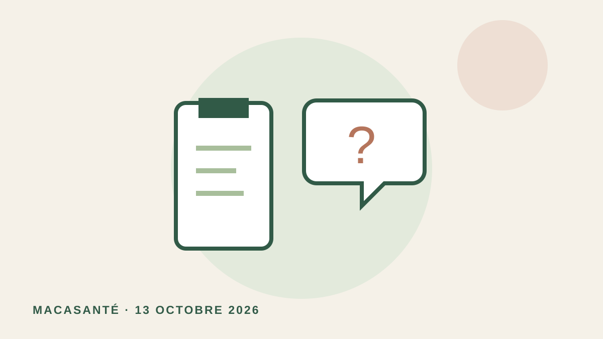

Illustration originale MACASANTÉ, schématique ; aucune image diagnostique réelle.
À LIRE EN 3 MIN · 13 OCTOBRE 2026
Nouveau médicament contre le cancer : faut-il aussi expliquer ce qu’on ignore ?
Deux essais montrent que décrire clairement les incertitudes modifie des décisions hypothétiques de traitement. Bénéfices, risques et incertitudes doivent tous être compréhensibles pour décider.
Ce qu’apporte la publication
Deux essais publiés le 12 octobre 2026, auprès de 6 272 adultes américains, évaluent l’effet d’explications simples sur les incertitudes des traitements. Dans le premier essai, ces informations réduisent de 10,1 points l’intention hypothétique de prendre le médicament.
Le message patient
Les bénéfices attendus, les risques et les incertitudes doivent tous être compréhensibles pour décider. Présenter un traitement demande aussi de rendre explicites les questions auxquelles les études ne répondent pas encore.
Les limites
Les chercheurs utilisent des scénarios hypothétiques chez des adultes recrutés en ligne. L’étude ne démontre rien concernant l’arrêt réel de traitements ou la survie. Ce sujet ne doit pas inciter à interrompre une prise en charge.
Sources
Information générale sous contrôle médical, ne remplaçant pas une consultation.